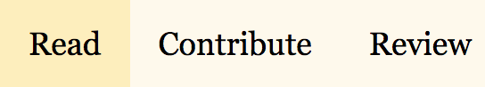

Sliced is a news analysis platform where community members contribute and curate content together. The platform succeeds when we all buy into its core values of respect, inclusion, and truth.
We believe that access to top quality journalism is a central part of a healthy democracy. Because of this, all Sliced articles are always complety free to read. There is no paywall and we don't collect or sell user data.
We also are strongly committed to the idea that good journalism should be compensated. To ensure that community members receive payment when their contributions are insightful, the community financially supports good work.
Sliced community members both read articles and create them together.
